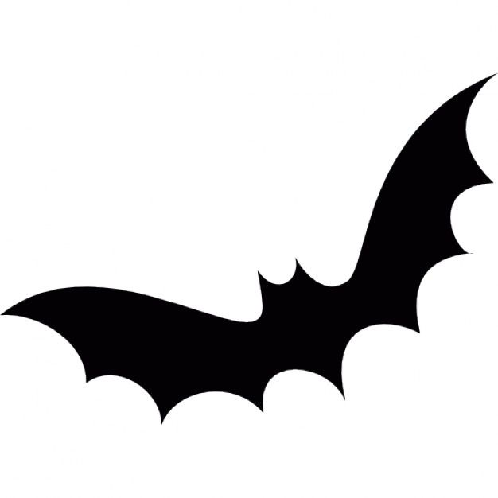

Rodada 3 · protótipo
Morcegos novos
Silhueta tirada do morcego_ref. As asas dobram como um braço: o ombro puxa e a ponta da asa vem atrasada; o corpo sobe a cada batida para baixo. A mesma animação vale para os divisores, as revoadas e a assinatura.
1 · Silhueta e batida

1,00×
2 · Revoada livre nas viradas
Na entrada das Produções e dos Sets: uma nuvem cheia de morcegos, cada um com a própria trajetória ondulada (nada de arco fixo), batendo as asas fora de sincronia. No site o avanço do bando acompanha o scroll; aqui ele passa em loop.
3 · Cobertura e assinatura
Saindo do Line-up: os morcegos chegam de todos os lados e tomam a tela (sem escurecer tudo: o fundo aparece nas frestas); a página troca por baixo deles e eles mesmos formam o "Brunin". Alguns pousam nas bordas das letras batendo as asas. Arraste para simular o scroll.